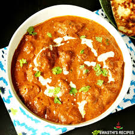

Chicken Tikka Masala

Indulge in the creamy and spicy flavors of Chicken Tikka Masala, a popular dish that combines marinated chicken
with a rich tomato-based sauce. Serve it with naan or rice for a complete meal.
Ingredients
- 1 pound chicken breast, cut into cubes
- 1 cup plain yogurt
- 2 tablespoons tikka masala spice mix
- 1 tablespoon ginger-garlic paste
- 1 can (15 oz) tomato sauce
- 1 cup heavy cream
- 2 tablespoons vegetable oil
- Salt to taste
- Cilantro for garnish
Home